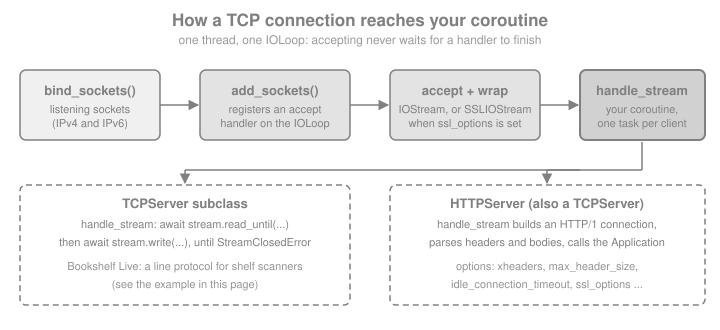

TCP Servers, IOStream & Low-level Networking
|
This content was generated with the assistance of AI and should be verified against the official documentation before being relied on in production. |
This page is written against Tornado 6.5.10 (released 2026-09-15), checked on 2026-10-07, on Python 3.13. Tornado 6.6 is only available as the alpha 6.6a1; the 6.6 changes mentioned below are marked as upcoming. Every example binds to a loopback address and port zero, so the operating system picks a free port, and every timing is illustrative.
Everything a Tornado web application does rests on a small number of classes in this page. An HTTPServer is a
TCPServer whose handle_stream parses HTTP; a RequestHandler runs on top of a stream; a WebSocket is a stream that
switched protocol. Knowing the lower layer explains the options that live on HTTPServer (why xheaders is dangerous
to enable without a proxy, why an oversized header gets no response at all, why a client that never sends anything is
disconnected after an hour by default), and it lets Bookshelf Live offer something a web framework alone cannot: a
plain line-based TCP service for the shelf scanners that the library staff attach to their handheld devices.
For the picture of the whole stack, see
Introduction & Architecture; for the event loop that drives
every stream, see Asynchronous I/O & the Event Loop.
From a Listening Socket to Your Coroutine
A server needs three things: listening sockets, a loop that notices incoming connections, and code that talks to each client. Tornado splits them across three functions and classes:
-
tornado.netutil.bind_socketscreates the listening sockets (several, when a hostname maps to IPv4 and IPv6). -
TCPServer.add_sockets(orlisten, which callsbind_socketsand thenadd_sockets) registers an accept handler for each socket on theIOLoop. From then on every accepted connection is wrapped in anIOStreamand passed tohandle_stream. -
TCPServer.handle_streamis the method you override. It receives the stream and the peer address.

handle_stream may be a coroutine. Accepting does not wait for it: the server starts the coroutine and goes back to
accepting, so thousands of clients can be inside handle_stream at the same time, each suspended at an await.
An exception that escapes a coroutine is logged, not propagated, and the stream stays open unless your code closes it,
which is why the examples below close the stream in a finally block.
Three patterns start a server, and they are the same for TCPServer and HTTPServer:
| Pattern | Use | Notes |
|---|---|---|
|
One process. Calls |
Takes effect immediately; the loop still has to run. With |
|
Full control over the sockets, or a multi-process server whose workers are forked after binding. |
Nothing that touches the event loop may run before |
|
Old multi-process shortcut. |
Deprecated: it relies on |
stop() closes the listening sockets so that no new connection is accepted; connections already in progress continue.
The constructor takes ssl_options, max_buffer_size (incoming data that may be buffered per stream, 100 MB by
default) and read_chunk_size (the size of each read from the socket, 64 KB by default).
Source: Tornado: tornado.tcpserver
A Line-based Service for Shelf Scanners
The library staff of Bookshelf Live point a handheld scanner at a book and the device asks the server for its title.
The device speaks a tiny protocol: one command per line, GET <id>, COUNT or QUIT, and one reply line per
command. The following program is the whole server, a client helper that uses TCPClient, and a run against a loopback
port.
import asyncio
from tornado.iostream import StreamClosedError
from tornado.netutil import bind_sockets
from tornado.tcpclient import TCPClient
from tornado.tcpserver import TCPServer
SHELF = {"bk-001": "Dune", "bk-002": "Neuromancer"}
class ShelfScannerServer(TCPServer):
"""One line in, one line out: GET <id>, COUNT or QUIT."""
async def handle_stream(self, stream, address):
try:
while True:
line = await stream.read_until(b"\n", max_bytes=128)
text = line.decode("ascii", "replace").strip()
command, _, argument = text.partition(" ")
if command == "GET":
title = SHELF.get(argument)
reply = f"OK {title}" if title else "ERR unknown"
elif command == "COUNT":
reply = f"OK {len(SHELF)}"
elif command == "QUIT":
await stream.write(b"BYE\n")
break
else:
reply = "ERR bad command"
await stream.write(reply.encode("ascii") + b"\n")
except StreamClosedError:
pass # the scanner went away, or sent a line that is too long
finally:
stream.close()
def listen_on_loopback(server):
"""Bind a free loopback port and return it."""
sockets = bind_sockets(0, "127.0.0.1")
server.add_sockets(sockets)
return sockets[0].getsockname()[1]
async def scan(port, *commands):
client = TCPClient()
stream = await client.connect("127.0.0.1", port)
replies = []
for command in commands:
await stream.write(command.encode("ascii") + b"\n")
replies.append((await stream.read_until(b"\n")).decode().strip())
stream.close()
client.close()
return replies
async def main():
server = ShelfScannerServer()
port = listen_on_loopback(server)
replies = await scan(port, "GET bk-001", "GET nope", "COUNT", "QUIT")
print(replies)
assert replies == ["OK Dune", "ERR unknown", "OK 2", "BYE"]
server.stop()
asyncio.run(main())Source: Tornado: tornado.tcpserver
Three details of this small server are worth copying into every real one:
-
The read has a
max_byteslimit. A scanner that never sends a newline cannot make the server buffer more than 128 bytes for one line. -
StreamClosedErroris the normal way a conversation ends (the peer closed, the connection was reset, or a limit was exceeded), so the loop catches it instead of letting it reach the log as an unhandled error. -
Replies are written with
await stream.write(...). The returned future resolves when the data has been handed to the operating system, so a slow client slows down only its own coroutine (see the backpressure section below).
IOStream Reads and Writes
IOStream wraps one non-blocking socket with a read buffer and a write buffer. Its methods return awaitables, and every
outstanding one fails with StreamClosedError when the stream closes. An IOStream can run only one read at a time:
starting a second read while another is pending fails with an AssertionError ("Already reading"). A read and a write
can overlap, so a protocol that needs concurrent readers and writers uses two coroutines on the same stream, one of
which only writes.
| Method | What it does |
|---|---|
|
Returns the data up to and including the delimiter. With |
|
The same for a regular expression given as bytes. |
|
Exactly |
|
Fills a |
|
Everything until the peer closes the connection. Limited by |
|
Appends |
|
Close the stream; run a function when it closes for any reason. |
|
Disable Nagle’s algorithm (TCP only), for protocols made of many small messages that are waiting for replies. |
The next example speaks a binary protocol over one connection. The server reads a header terminated by a blank line with a
regular expression, then a 4-byte big-endian length, then the body into a pre-allocated buffer, then a trailer in
chunks with partial=True, and finally whatever is left until the client closes.
import asyncio
import struct
from tornado.iostream import StreamClosedError
from tornado.tcpclient import TCPClient
from tornado.tcpserver import TCPServer
received = {}
class UploadServer(TCPServer):
async def handle_stream(self, stream, address):
try:
received["header"] = await stream.read_until_regex(rb"\r?\n\r?\n")
(length,) = struct.unpack("!I", await stream.read_bytes(4))
body = bytearray(length)
await stream.read_into(body)
received["body"] = bytes(body)
trailer = b""
while len(trailer) < 6:
trailer += await stream.read_bytes(6 - len(trailer), partial=True)
received["trailer"] = trailer
received["rest"] = await stream.read_until_close()
except StreamClosedError:
received["closed"] = True
finally:
stream.close()
async def main():
server = UploadServer()
port = listen_on_loopback(server)
client = TCPClient()
stream = await client.connect("127.0.0.1", port)
payload = (
b"UPLOAD cover.png\r\n\r\n"
+ struct.pack("!I", 5)
+ b"hello"
+ b"-end-!"
+ b"leftover"
)
await stream.write(payload)
stream.close()
for _ in range(100):
if "rest" in received:
break
await asyncio.sleep(0.01)
server.stop()
print(received)
assert received["header"] == b"UPLOAD cover.png\r\n\r\n"
assert received["body"] == b"hello"
assert received["trailer"] == b"-end-!"
assert received["rest"] == b"leftover"
asyncio.run(main())Source: Tornado: tornado.iostream
Limits and Closed Streams
A limit that is exceeded closes the stream; the reader sees StreamClosedError, and the peer sees the connection end.
This is the behaviour to expect from max_bytes, from a stream whose buffer exceeds max_buffer_size, and from a
connection reset. The example sends the Bookshelf Live scanner server of the previous section a line that is too
long:
import asyncio
from tornado.iostream import StreamClosedError
from tornado.tcpclient import TCPClient
async def main():
server = ShelfScannerServer()
port = listen_on_loopback(server)
client = TCPClient()
stream = await client.connect("127.0.0.1", port)
closed = asyncio.get_running_loop().create_future()
stream.set_close_callback(lambda: closed.set_result(True))
await stream.write(b"GET " + b"x" * 300 + b"\n") # no newline within 128 bytes
try:
await stream.read_until(b"\n")
except StreamClosedError:
print("server closed the connection: line too long")
await asyncio.wait_for(closed, 2)
assert stream.closed()
server.stop()
asyncio.run(main())Source: Tornado: BaseIOStream.read_until
Backpressure
write never blocks and never fails because the peer is slow; it appends to a buffer that the loop drains as the
socket accepts data. A coroutine that writes in a loop without awaiting the returned futures can therefore grow the
buffer without limit when the client reads slowly. Two defences exist:
-
await stream.write(chunk)in the loop, as the scanner server does, so each coroutine runs only as fast as its client. -
The
max_write_buffer_sizeargument of theIOStreamconstructor, after whichwriteraisesStreamBufferFullErrorinstead of buffering more. Streams created byTCPServerandTCPClientdo not expose that argument; anIOStreamthat you build yourself from a socket does.
import asyncio
import socket
from tornado.iostream import IOStream, StreamBufferFullError
async def main():
ours, theirs = socket.socketpair()
stream = IOStream(ours, max_write_buffer_size=1000)
try:
stream.write(b"x" * 2000)
except StreamBufferFullError:
print("refused: more than 1000 bytes would be buffered")
await stream.write(b"ok")
theirs.setblocking(False)
await asyncio.sleep(0.05)
assert theirs.recv(2) == b"ok"
stream.close()
theirs.close()
asyncio.run(main())Source: Tornado: StreamBufferFullError
TCPClient and Name Resolution
TCPClient.connect(host, port, af=AF_UNSPEC, ssl_options=None, max_buffer_size=None, source_ip=None, source_port=None,
timeout=None) resolves the name, tries the resulting addresses (IPv6 and IPv4 are raced, so a dead address does not
delay the connection by a full timeout) and returns a connected IOStream, or an SSLIOStream when ssl_options is
given. timeout accepts seconds or a timedelta; on expiry it raises TimeoutError. A refused connection surfaces as a StreamClosedError (an IOError) whose
real_error attribute holds the operating system’s exception. Prefer TCPClient to calling IOStream.connect with a hostname:
IOStream.connect resolves names synchronously and blocks the loop.
Name resolution goes through a Resolver. The implementations, according to the Tornado documentation:
| Class | Notes |
|---|---|
|
The default since 6.2; calls |
|
Wraps another resolver with local overrides (hostname to host, or host and port to host and port, optionally with an address family), useful for tests and for pointing a hostname at a local fake. |
|
Deprecated (the executor one since 6.2, the other two since 5.0). |
|
Deprecated. |
Resolver.configure("module.ClassName", **options) replaces the default for the whole process. The example below
gives TCPClient an OverrideResolver so that the made-up name scanner.bookshelf.test reaches a local server, and
shows the errors a client has to expect.
import asyncio
from tornado.iostream import StreamClosedError
from tornado.netutil import OverrideResolver, Resolver
from tornado.tcpclient import TCPClient
async def main():
server = ShelfScannerServer()
port = listen_on_loopback(server)
resolver = OverrideResolver(
resolver=Resolver(),
mapping={("scanner.bookshelf.test", port): ("127.0.0.1", port)},
)
client = TCPClient(resolver=resolver)
stream = await client.connect("scanner.bookshelf.test", port, timeout=2)
await stream.write(b"COUNT\n")
print(await stream.read_until(b"\n"))
stream.close()
server.stop()
# A port nobody listens on: the operating system refuses the connection.
unused = bind_sockets(0, "127.0.0.1")
dead_port = unused[0].getsockname()[1]
unused[0].close()
try:
await TCPClient().connect("127.0.0.1", dead_port, timeout=2)
except StreamClosedError as exc:
print("connect failed:", type(exc).__name__, "caused by", type(exc.real_error).__name__)
asyncio.run(main())Source: Tornado: tornado.tcpclient and Tornado: tornado.netutil
The netutil Toolbox
tornado.netutil contains the socket helpers the servers use, available when you need less than a TCPServer:
| Function | Use |
|---|---|
|
Listening sockets for a port and address. An empty address listens on every interface, and a hostname on every address it maps to. |
|
One listening Unix domain socket (POSIX only); replaces an existing socket file but refuses to replace any other file. The default mode keeps other users away, which is the usual way to put nginx and Tornado on the same machine. |
|
Registers |
|
Whether a string is a literal IPv4 or IPv6 address; used when |
The next example skips TCPServer and uses the two lowest-level pieces: an accept handler and an IOStream you create
yourself, then a TCPServer listening on a Unix domain socket.
import asyncio
import os
import tempfile
from tornado.iostream import IOStream
from tornado.netutil import add_accept_handler, bind_unix_socket, is_valid_ip
async def echo_once(stream):
line = await stream.read_until(b"\n")
await stream.write(line.upper())
stream.close()
async def main():
sockets = bind_sockets(0, "127.0.0.1")
port = sockets[0].getsockname()[1]
tasks = []
def on_accept(connection, address):
tasks.append(asyncio.ensure_future(echo_once(IOStream(connection))))
remove = add_accept_handler(sockets[0], on_accept)
client = TCPClient()
stream = await client.connect("127.0.0.1", port)
await stream.write(b"shelf a\n")
print(await stream.read_until(b"\n"))
stream.close()
remove()
await asyncio.gather(*tasks)
print(is_valid_ip("203.0.113.7"), is_valid_ip("not-an-ip"))
with tempfile.TemporaryDirectory() as directory:
path = os.path.join(directory, "scanner.sock")
server = ShelfScannerServer()
server.add_socket(bind_unix_socket(path, mode=0o600))
reader, writer = await asyncio.open_unix_connection(path)
writer.write(b"COUNT\n")
await writer.drain()
print(await reader.readline())
writer.close()
server.stop()
asyncio.run(main())Source: Tornado: tornado.netutil
TLS with ssl.SSLContext
Pass an ssl.SSLContext as ssl_options and the server wraps every accepted socket in a TLS session and hands your
code an SSLIOStream; TCPClient.connect(..., ssl_options=context) does the same for the client. A dictionary of
wrap_socket keyword arguments is still accepted for compatibility with older versions of Python, but a context is
the only form that gives you control over protocol versions, ciphers and verification, so use one.
Two details matter. handle_stream can be called before the handshake has finished; call
await stream.wait_for_handshake() first whenever you want to inspect the client certificate or the ALPN result.
And certificates are verified by default on the client side (since Tornado 4.2): ssl.create_default_context checks
the chain and the host name, so a self-signed development certificate has to be passed as cafile, not disabled.
The example creates a throw-away certificate with the openssl command line tool, which is only the test fixture, runs
the scanner server with TLS and with a required client certificate (mutual TLS), and connects with a context that
trusts exactly that certificate.
import asyncio
import pathlib
import ssl
import subprocess
import tempfile
from tornado.tcpclient import TCPClient
def make_test_certificate(directory):
cert = pathlib.Path(directory) / "cert.pem"
key = pathlib.Path(directory) / "key.pem"
subprocess.run(
[
"openssl", "req", "-x509", "-newkey", "rsa:2048", "-nodes",
"-keyout", str(key), "-out", str(cert), "-days", "1",
"-subj", "/CN=localhost",
"-addext", "subjectAltName=DNS:localhost",
],
check=True,
capture_output=True,
)
return str(cert), str(key)
class TLSShelfScanner(ShelfScannerServer):
handshakes = []
async def handle_stream(self, stream, address):
await stream.wait_for_handshake()
peer = stream.socket.getpeercert()
self.handshakes.append((stream.socket.version(), bool(peer)))
await super().handle_stream(stream, address)
async def main():
with tempfile.TemporaryDirectory() as directory:
cert, key = make_test_certificate(directory)
server_context = ssl.create_default_context(ssl.Purpose.CLIENT_AUTH)
server_context.load_cert_chain(cert, key)
server_context.load_verify_locations(cert)
server_context.verify_mode = ssl.CERT_REQUIRED # mutual TLS
client_context = ssl.create_default_context(cafile=cert)
client_context.load_cert_chain(cert, key)
server = TLSShelfScanner(ssl_options=server_context)
port = listen_on_loopback(server)
client = TCPClient()
stream = await client.connect("localhost", port, ssl_options=client_context)
await stream.write(b"GET bk-002\n")
print(await stream.read_until(b"\n"))
stream.close()
print(TLSShelfScanner.handshakes)
server.stop()
asyncio.run(main())Source: Tornado: SSLIOStream and Python: ssl
Certificates for real deployments come from a certificate authority and are loaded from files the process can read;
the files and the key passwords are configuration, never source code. Many deployments let a reverse proxy terminate
TLS instead and run Tornado on plain HTTP behind it, which is where xheaders and protocol below come in.
STARTTLS: Switching a Connection to TLS
Some protocols (SMTP, IMAP, XMPP) begin in clear text and upgrade on request. IOStream.start_tls(server_side,
ssl_options=None, server_hostname=None) returns an awaitable SSLIOStream and leaves the original stream unusable. It
must be called when no read or write is outstanding and nothing is buffered, so call it right after reading and writing
the last clear-text data. The scanner of this example asks for an upgrade before it sends anything secret.
import asyncio
import ssl
import tempfile
from tornado.tcpclient import TCPClient
from tornado.tcpserver import TCPServer
class StartTLSServer(TCPServer):
def __init__(self, context):
super().__init__()
self.context = context
async def handle_stream(self, stream, address):
await stream.read_until(b"STARTTLS\n")
await stream.write(b"READY\n")
secure = await stream.start_tls(server_side=True, ssl_options=self.context)
line = await secure.read_until(b"\n")
await secure.write(b"secure: " + line)
secure.close()
async def main():
with tempfile.TemporaryDirectory() as directory:
cert, key = make_test_certificate(directory)
server_context = ssl.create_default_context(ssl.Purpose.CLIENT_AUTH)
server_context.load_cert_chain(cert, key)
client_context = ssl.create_default_context(cafile=cert)
server = StartTLSServer(server_context)
port = listen_on_loopback(server)
stream = await TCPClient().connect("localhost", port) # clear text
await stream.write(b"STARTTLS\n")
assert await stream.read_until(b"\n") == b"READY\n"
secure = await stream.start_tls(
False, ssl_options=client_context, server_hostname="localhost"
)
await secure.write(b"GET bk-001\n")
print(await secure.read_until(b"\n"))
secure.close()
server.stop()
asyncio.run(main())Source: Tornado: IOStream.start_tls
HTTPServer Options
HTTPServer turns the same machinery into an HTTP/1.1 server. The first argument is
usually a tornado.web.Application (any HTTPServerConnectionDelegate also works). Application.listen is a shortcut that creates the HTTPServer and listens; it returns the server, and keyword
arguments that listen does not know are forwarded to the HTTPServer constructor. Create the server explicitly
when you need ssl_options, add_sockets or a graceful shutdown.
| Option | Default | Effect and advice |
|---|---|---|
|
|
Trust |
|
none |
A list of proxy addresses to skip when reading |
|
none |
Force |
|
none |
An |
|
65536 |
Largest block of request headers. A larger block closes the connection without an HTTP response. |
|
|
Largest request body. A larger |
|
none |
Seconds allowed to receive a complete body. |
|
3600 |
Seconds a connection may stay silent before the headers arrive (including between keep-alive requests); then it is closed. |
|
|
Inflate request bodies that arrive with |
|
65536 |
Size of each read from the socket. |
|
100 MB |
Per-stream read buffer, as for |
|
|
Close the connection after each response. |
Think of the three size options as one policy: max_buffer_size bounds what one connection may hold, while
max_body_size and max_header_size decide when Tornado gives up on a client, and a server exposed to the Internet
should keep all three as small as its largest legitimate request allows. Per-handler limits are covered in
Applications & Request Handlers.
The following example runs one handler on several servers that differ in a single option, sends raw HTTP over a socket so that nothing hides the behaviour, and checks what each option does.
import asyncio
import gzip
import time
from tornado.httpserver import HTTPServer
from tornado.web import Application, RequestHandler
class WhoAmI(RequestHandler):
def get(self):
self.write({"ip": self.request.remote_ip, "protocol": self.request.protocol})
def post(self):
self.write(f"{len(self.request.body)} bytes")
def serve(**options):
server = HTTPServer(Application([("/", WhoAmI)]), **options)
return server, listen_on_loopback(server)
async def raw_http(port, request, timeout=3):
reader, writer = await asyncio.open_connection("127.0.0.1", port)
writer.write(request)
await writer.drain()
data = await asyncio.wait_for(reader.read(), timeout)
writer.close()
return data
FORWARDED = (
b"GET / HTTP/1.1\r\nHost: shelf\r\nConnection: close\r\n"
b"X-Forwarded-For: 198.51.100.9, 10.0.0.1\r\n"
b"X-Forwarded-Proto: https\r\n\r\n"
)
async def main():
# xheaders off (default), on, and on with a trusted proxy
for options in ({}, {"xheaders": True},
{"xheaders": True, "trusted_downstream": ["10.0.0.1"]}):
server, port = serve(**options)
body = (await raw_http(port, FORWARDED)).split(b"\r\n\r\n", 1)[1]
print(options, body.decode())
server.stop()
# a header block larger than max_header_size: the connection is closed, no response
server, port = serve(max_header_size=200)
big = b"GET / HTTP/1.1\r\nHost: shelf\r\nX-Big: " + b"a" * 500 + b"\r\n\r\n"
reply = await raw_http(port, big)
print("oversized headers ->", reply)
assert reply == b""
server.stop()
# request bodies: compressed, and larger than max_body_size
compressed = gzip.compress(b"x" * 1000)
post = (
b"POST / HTTP/1.1\r\nHost: shelf\r\nConnection: close\r\n"
b"Content-Encoding: gzip\r\nContent-Length: %d\r\n\r\n" % len(compressed)
) + compressed
for decompress in (False, True):
server, port = serve(decompress_request=decompress)
body = (await raw_http(port, post)).split(b"\r\n\r\n", 1)[1]
print("decompress_request =", decompress, "->", body.decode())
server.stop()
server, port = serve(max_body_size=100)
reply = await raw_http(
port,
b"POST / HTTP/1.1\r\nHost: shelf\r\nContent-Length: 1000\r\n\r\n" + b"y" * 1000,
)
print("body over max_body_size ->", reply)
server.stop()
# idle_connection_timeout and body_timeout close silent connections
server, port = serve(idle_connection_timeout=0.3, body_timeout=0.3)
started = time.monotonic()
assert await raw_http(port, b"") == b""
print(f"silent connection closed after {time.monotonic() - started:.1f} s")
started = time.monotonic()
await raw_http(
port, b"POST / HTTP/1.1\r\nHost: shelf\r\nContent-Length: 10\r\n\r\nabc"
)
print(f"stalled body closed after {time.monotonic() - started:.1f} s")
server.stop()
asyncio.run(main())Source: Tornado: tornado.httpserver
Reading the output: with xheaders off, the forwarded headers are ignored and the handler sees the loopback address of
the test client. With it on, the closest address (10.0.0.1, the proxy) is reported, which is useless for rate limiting
or audit logs; with trusted_downstream=["10.0.0.1"] the proxy is skipped and the real client appears. The same
mechanism is the pitfall of the option: a server that is reachable without the proxy lets any client choose its own
address and protocol by sending the headers itself. The oversized header block produced no response at all, and the body
that exceeded max_body_size produced a bare 400 Bad Request; the silent and the stalled connections were closed
after the configured 0.3 seconds.
One Process, Two Protocols
Nothing ties a process to one server. Bookshelf Live runs its web application and its scanner service on the same
event loop and the same thread; they share in-process objects such as the shelf dictionary without locks, under the
single-thread rules of the event loop. The example mounts both, uses Application.listen for the web side, and ends
with the graceful-shutdown sequence: stop accepting, close the HTTP connections (including idle keep-alive ones), and
close the scanner streams that the server tracked.
import asyncio
from tornado.httpclient import AsyncHTTPClient
from tornado.testing import bind_unused_port
from tornado.web import Application, RequestHandler
class ShelfCount(RequestHandler):
def get(self):
self.write({"count": len(SHELF)})
class TrackingScanner(ShelfScannerServer):
def __init__(self):
super().__init__()
self.streams = set()
async def handle_stream(self, stream, address):
self.streams.add(stream)
stream.set_close_callback(lambda: self.streams.discard(stream))
await super().handle_stream(stream, address)
async def main():
scanner = TrackingScanner()
scanner_port = listen_on_loopback(scanner)
sock, web_port = bind_unused_port()
sock.close() # free the port again for Application.listen
http = Application([("/count", ShelfCount)]).listen(web_port, address="127.0.0.1")
web = await AsyncHTTPClient().fetch(f"http://127.0.0.1:{web_port}/count")
print(web.body, await scan(scanner_port, "COUNT"))
# an idle scanner connection stays open until we close it
idle = await TCPClient().connect("127.0.0.1", scanner_port)
await asyncio.sleep(0.05)
http.stop()
scanner.stop()
await asyncio.wait_for(http.close_all_connections(), 5)
for stream in list(scanner.streams):
stream.close()
await asyncio.sleep(0.05) # let the close callbacks run
print("open scanner streams after shutdown:", len(scanner.streams))
idle.close()
AsyncHTTPClient().close()
asyncio.run(main())close_all_connections does not close WebSocket connections, so a server that also serves WebSockets keeps its own
registry of them and closes each one. Signal handling and the details of shutting down inside asyncio.run belong to
Running & Deploying.
Testing TCP Services
tornado.testing.bind_unused_port returns a listening loopback socket and its port, which add_socket accepts, and
AsyncTestCase with @gen_test runs coroutine tests under a timeout. This is the same approach used for HTTP in
Getting Started; the difference is that the test talks to the server with
TCPClient.
import unittest
from tornado.tcpclient import TCPClient
from tornado.testing import AsyncTestCase, bind_unused_port, gen_test
class ScannerTest(AsyncTestCase):
@gen_test
async def test_get_known_and_unknown_books(self):
sock, port = bind_unused_port()
server = ShelfScannerServer()
server.add_socket(sock)
stream = await TCPClient().connect("127.0.0.1", port)
await stream.write(b"GET bk-001\nGET missing\n")
self.assertEqual(await stream.read_until(b"\n"), b"OK Dune\n")
self.assertEqual(await stream.read_until(b"\n"), b"ERR unknown\n")
stream.close()
server.stop()
result = unittest.TextTestRunner().run(
unittest.defaultTestLoader.loadTestsFromTestCase(ScannerTest)
)
assert result.wasSuccessful()Source: Tornado: tornado.testing
Pitfalls
-
Blocking inside
handle_stream. The coroutine runs on the loop thread: a synchronous driver call, atime.sleepor a long computation stalls every other client. See Asynchronous I/O & the Event Loop. -
No framing. TCP is a byte stream: one
writeon the client can arrive as several reads, and several writes as one. Frame messages with a delimiter (read_until), a length prefix (read_bytes) or both, and bound them withmax_bytesor a length check. -
Unbounded buffering. Leave no read without a limit, and write in a loop only with
await stream.write(...). -
Two readers on one stream. A second read while one is pending raises
AssertionError. -
Unclosed streams. A
handle_streamthat returns without closing leaves the connection open; wrap the body intry/finallyand close the stream. -
Using the stream after
start_tls. Continue with the stream thatstart_tlsreturned. -
xheaderswithout a proxy. Any client can forge its address and protocol. -
Disabling certificate verification to make a test pass. Pass the test certificate as
cafileinstead, as above. -
Resolving names with
IOStream.connect. It blocks the loop; useTCPClient. -
Clear-text services on the Internet. A raw TCP service has no authentication or encryption unless you add them: require TLS (with client certificates when the devices are yours) or keep the port on a private network.
Recent Changes and Outdated Material
| Version | Change that matters here |
|---|---|
4.2 (2015) |
|
4.5 (2017) |
|
5.0 (2018) |
|
6.0 (2019) |
All |
6.2 (2022) |
|
6.6 (upcoming, alpha 6.6a1 only) |
Python 3.11 or newer required; see the release notes before upgrading |
Source: Tornado: Release notes
Older articles show IOStream.read_until(b"\n", callback), IOLoop.instance().start(), server.bind(port) and
server.start(0), or an HTTPServer(app, io_loop=loop) construction. They no longer work or are deprecated. The
standard library offers the same service shape with asyncio.start_server (streams of StreamReader and
StreamWriter); Tornado’s classes predate it and remain the tool that integrates with RequestHandler,
HTTPServer and the other Tornado components.